El mayor rascacielos de Barcelona y uno de los símbolos arquitectónicos de la ciudad y de los Juegos Olímpicos de 1992 cambiará de propietario.
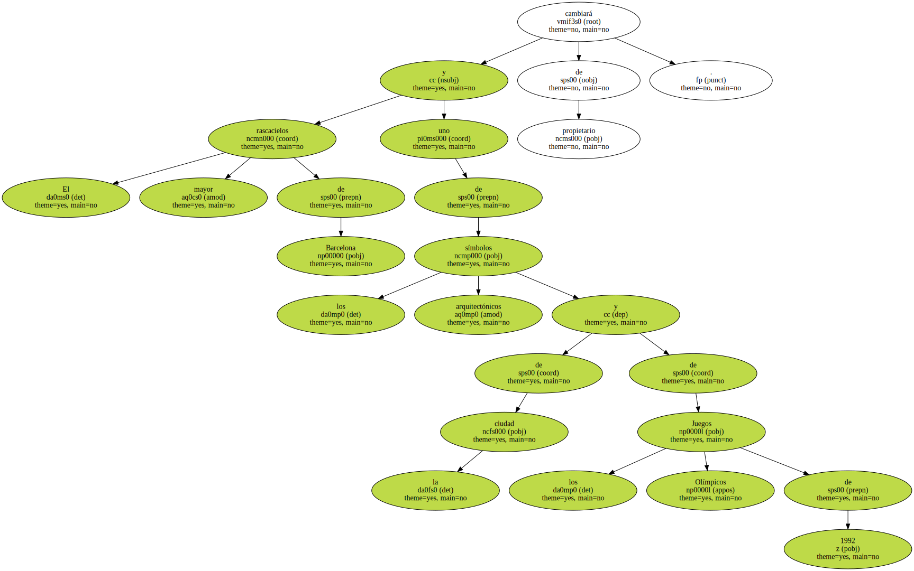El Deutsche Bank ha ganado la subasta del Hotel Arts y se lo ha adjudicado por un importe de 48.000 millones de pesetas ( 288,4 millones de euros ) , según informó ayer la agencia Efe , que cita fuentes del sector conocedoras de la operación.
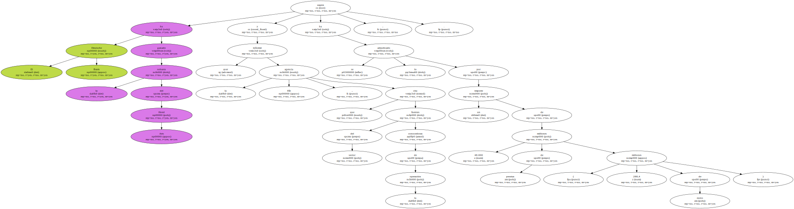El pasado jueves se firmó en Londres un preacuerdo privado entre los actuales dueños , el grupo japonés Sogo , y el Deutsche Bank.
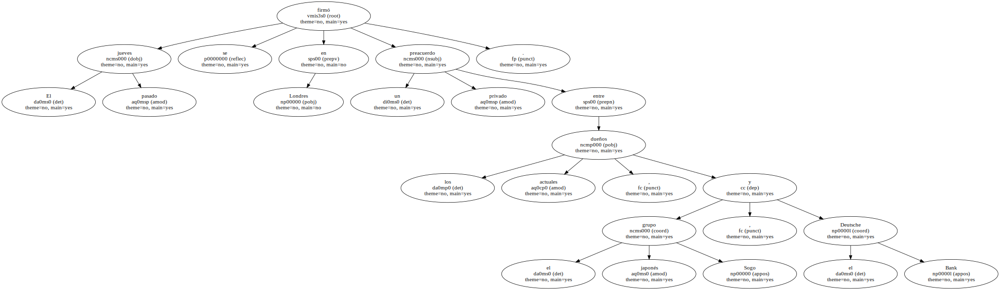La operación es la más importante del año en Barcelona en el terreno inmobiliario y una de las más costosas del mercado español.
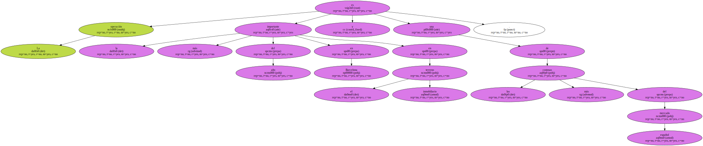El Deutsche Bank es el primer banco europeo y uno de los mayores del mundo.
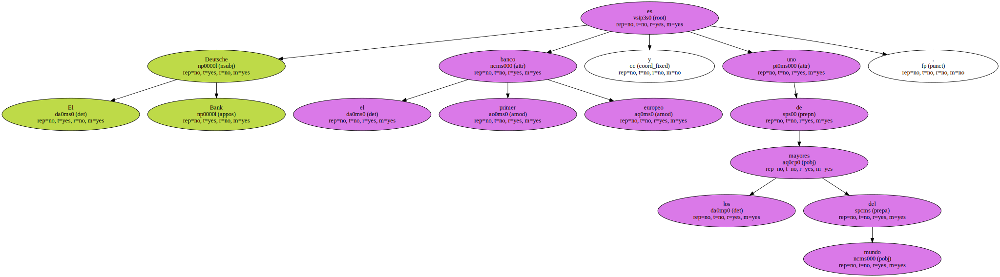Uno de sus principales accionistas es La Caixa , que posee el 4,03% del capital de la institución financiera alemana.
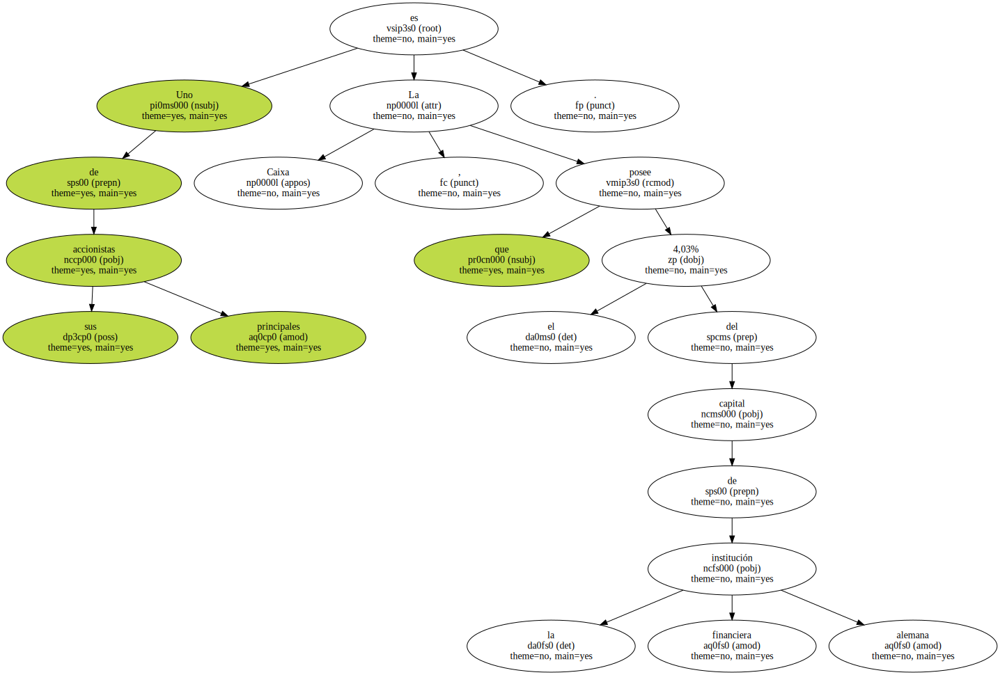La adquisición incluye el hotel ( un cinco estrellas de gran lujo ) , un espacio de oficinas anexo y las antiguas galerías comerciales de Sogo - - que ahora albergan la sede del Casino de Barcelona - -.

La compra se formalizará en breve.
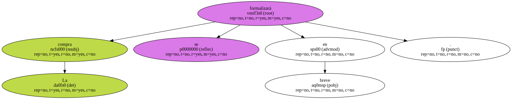El banco ha derrotado a los dos grupos que aspiraban a adquirir uno de los inmuebles más emblemáticos de la Barcelona olímpica.
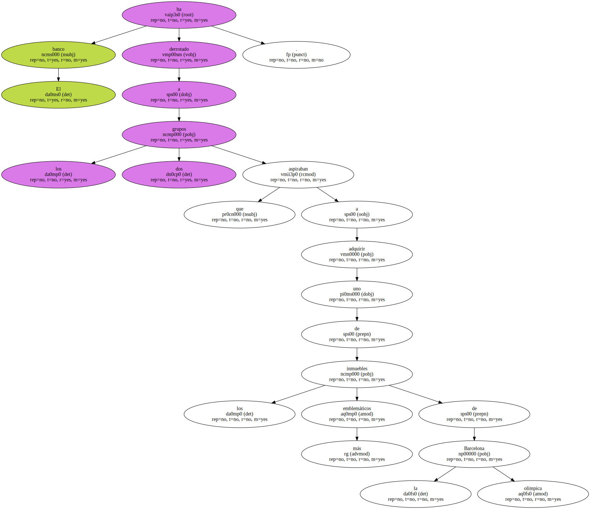Entre los aspirantes figuraba el fondo participado por Prudential y Goldman Sachs - - Strategic Hotel Capital ( SHC ) - - , aliado con un consorcio español integrado por el propietario de Inditex , Amancio Ortega , la empresaria Alicia Koplowitz y el grupo inversor catalán Metrópolis ( en el que participa la familia Lara , propietaria del grupo editorial Planeta ).
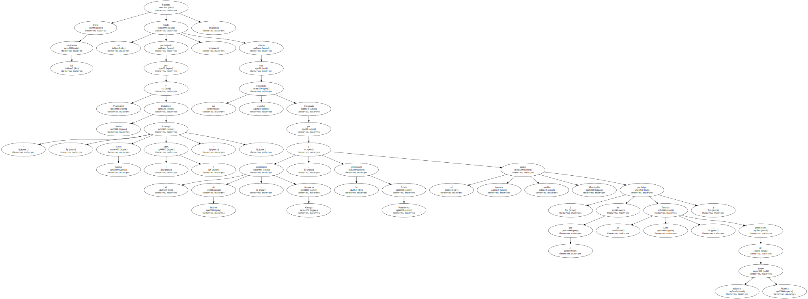Ofrecieron 36.000 millones de pesetas ( 216,3 millones de euros ).
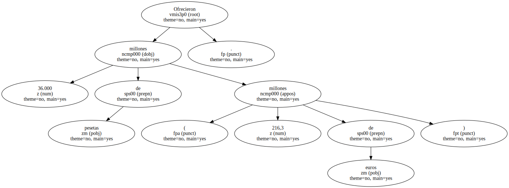El otro aspirante era el fondo inmobiliario estadounidense Blackstone , que compró en 1999 la cadena hotelera Savoy al grupo francés Vivendi.
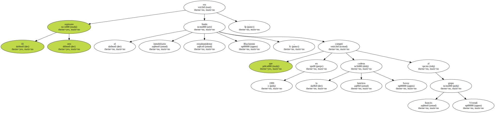El complejo adquirido está formado por 482 habitaciones y 38 apartamentos de lujo ; un edificio anexo de 6.000 metros cuadrados y un solar apto para levantar otro hotel de 12.000 metros cuadrados , además de los 14.000 metros de galerías comerciales , que ahora ocupa el casino.
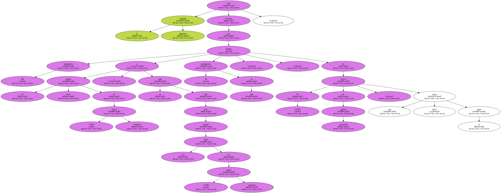Los 48.000 millones de pesetas que Sogo recibirá por estos activos son inferiores tanto a las deudas del grupo de sociedades controladas por Sogo en España - - más de 80.000 millones de pesetas ( 480,8 millones de euros ) a finales de 1998 como al valor contable de los activos 68.700 millones ( 412,8 millones de euros ) - -.
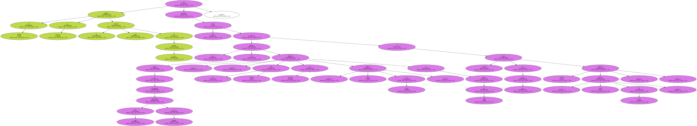La subasta del mayor rascacielos de Barcelona - - supera los 160 metros de altitud - - se ha producido tras el atentado contra las Torres Gemelas del pasado 11 de septiembre en Estados Unidos , lo que según fuentes inmobiliarias , presionó a la baja las expectativas de venta de los japoneses.
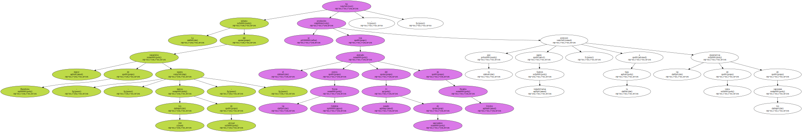La gestión del hotel se halla en manos de la empresa R-C Spain SL - - filial de la cadena hotelera internacional Ritz-Carlton - - hasta el 2019.
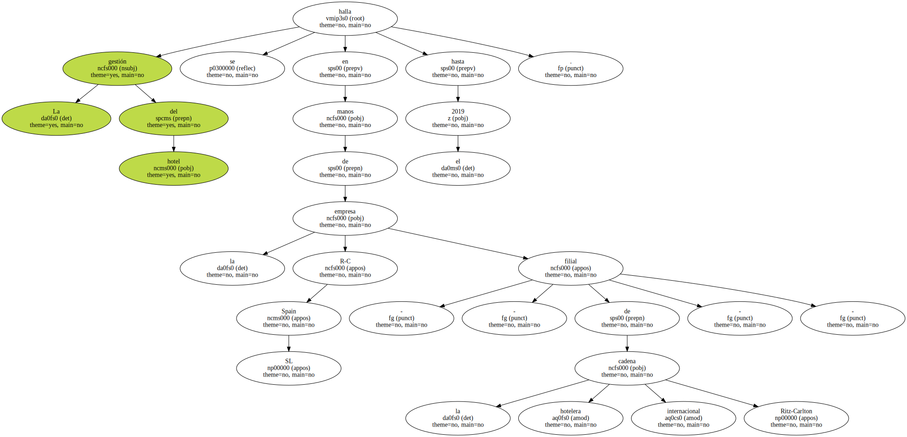Fuentes de la dirección del establecimiento desconocían ayer los cambios que se habían producido en la propiedad del inmueble.
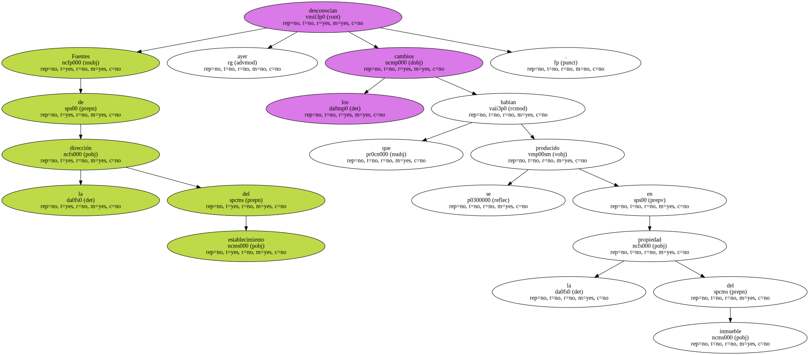